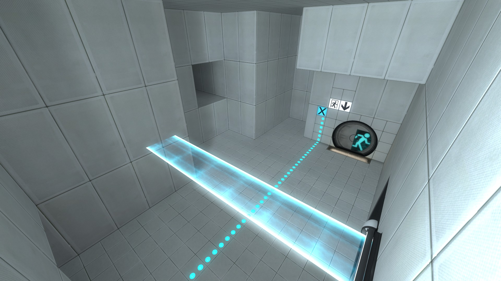

Build identification
PSBR lists the July 2010 revision as depot 852_2.
PSBR ↗ · community discussion, not an official build changelog
Mid-2010 build from the evolving Portal 2 campaign. Changes can be compared with the August Corehub-derived material.
PSBR lists the July 2010 revision as depot 852_2.
PSBR ↗ · community discussion, not an official build changelog
A later PSBR investigation describes how August scenes still preserve geometry and triggers from Corehub.
PSBR ↗ · community discussion, not an official build changelog
This depot is much closer to the retail campaign structure than CoreHub, while major late-game sections remain experimental.
Early versions of the underground Enrichment Shaft sequence and other rough transitions remain visible.
The 2010 gel research still includes variants of sticky/adhesive paint later removed from the game.
Early cooperative content and standalone test maps are documented separately from the main campaign.
The observations here are tied to PSBR and VCC discussion records and contemporary footage. For exact depot metadata, compare the dated Hidden Palace prototype entry ↗. Where video footage uses a patched build or a different revision, the label below identifies the difference.
This artwork comes from Valve's later Portal 2 development and The Final Hours of Portal 2. It documents the evolving visual identity, character designs and discarded concepts of the finished game's production. These are contextual comparisons, not screenshots or proof that any pictured artwork existed in this exact dated prototype.
FULL SOURCE ART INDEX ↗
Retail-era underground Aperture design study.
VIEW ORIGINAL ART RECORD ↗
Retail-era environment direction.
VIEW ORIGINAL ART RECORD ↗
Character development from The Final Hours.
VIEW ORIGINAL ART RECORD ↗
Later portal gun visual development.
VIEW ORIGINAL ART RECORD ↗Screenshots are preserved from community-server research. Each image links to its source discussion.
